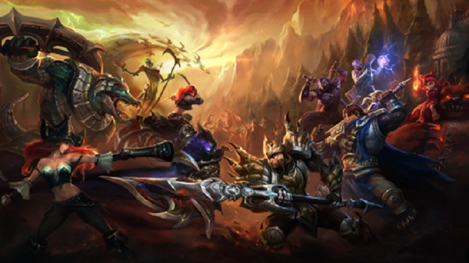
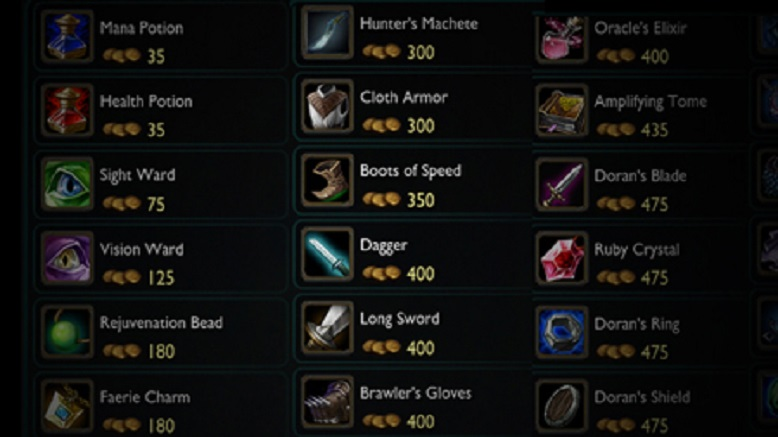
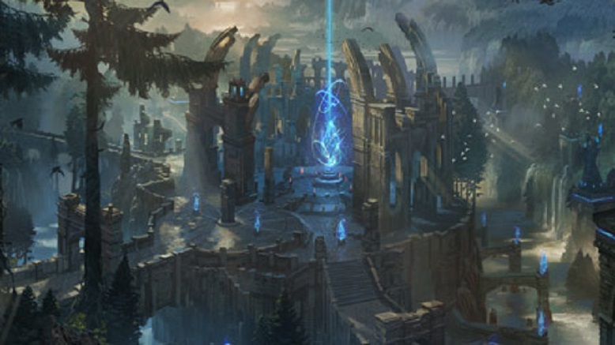
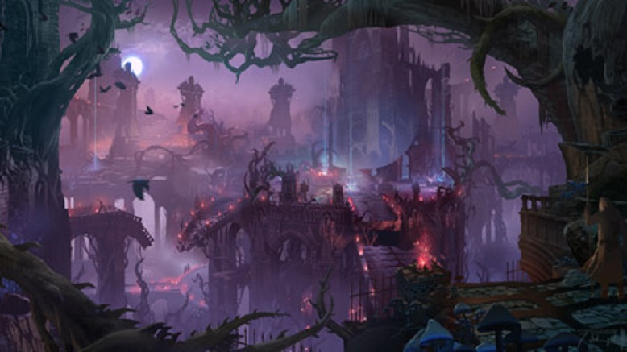
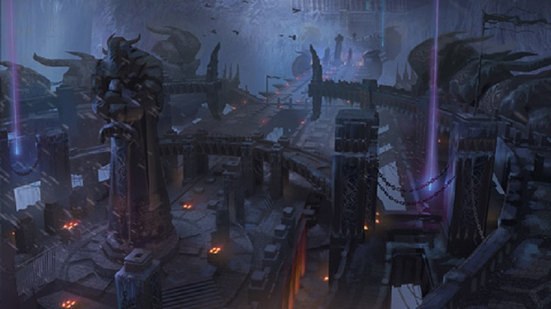

In the new player guide, you’ll learn how to control your champion, the structures you’ll encounter on the battlefield and play through the tutorial process. When you’re ready, you’ll enter the fray in your first game of competitive League of Legends..
Champions and Items
League of Legends features an ever-expanding roster of champions, each with a unique design and playstyle. Here you can browse the current lineup and find out more about characters that interest you.
 View the full champion lineup Learn More  The arsenal of items Learn MoreCustomize your Summoner
As a summoner you employ a number of tools to aid your champion on the battlefield. Runes, masteries and summoner spells enable you to customize your champion to suit your individual playstyle. Learn more
The arsenal of items Learn More- Cast powerful summoner spells.
- Boost your champion’s stats with runes.
- Enhance your champion with masteries.
The Summoner’s Code serves a blueprint for positive behavior on and off the Fields of Justice. The tenets of the code encourage you to play as a team, provide constructive feedback, build relationships and help new players. Read the code.
Game Modes: Classic
Battlefields fall into two primary game modes: Classic and Dominion. Classic game mode requires you to destroy the enemy's nexus while defending your own. A game of Dominion requires you to hold the majority of capture points on the map to damage the enemy nexus.
 Summoner's Rift: League of Legends' flagship Field of Justice, Summoner's Rift, remains the battleground of choice for the majority of players. Two teams of five champions battle across three lanes and an expansive jungle that holds powerful buffs and major neutral objectives. An extended laning phase and large-scale team fights are characteristic of this battlefield. Learn More  The Twisted Treeline: The second Field of Justice added to League of Legends, Twisted Treeline, features two lanes and teams of three champions. Champions begin play with higher starting gold totals than Summoner's Rift, sparking fast engagements and frequent team fights. A single, centralized jungle between the lanes holds capturable altars that encourage battle over neutral objectives and frequent ganking. Learn More  Howling Abyss: Inspired by the popular community game mode All Random All Mid, the Howling Abyss features two teams of five champions battling over a single lane. The summoner platform provides no healing and shopping is strictly limited to periods after your champion has died. This pushes the map toward aggressive, high-intensity gameplay centered on team fights. Learn More